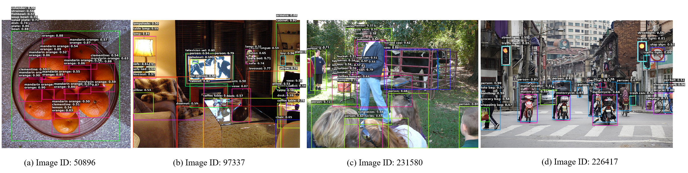

Abstract
Real-time open-vocabulary object detection (OVOD) is essential for practical deployment in dynamic environments, where models must recognize a large and evolving set of categories under strict latency constraints. Current real-time OVOD methods are predominantly built upon YOLO-style models. In contrast, real-time DETR-based methods still lag behind in terms of inference latency, model lightweightness, and overall performance. In this work, we present OV-DEIM, an end-to-end DETR-style open-vocabulary detector built upon recent DEIMv2 framework with integrated vision–language modeling for efficient open-vocabulary inference. We further introduce a simple query supplement strategy that improves Fixed AP without compromising inference speed. Beyond architectural improvements, we introduce GridSynthetic, a simple yet effective data augmentation strategy that composes multiple training samples into structured image grids. By exposing to model to richer object co-occurrence patterns and spatial layouts within a single forward pass, GridSynthetic mitigates negative impact of noisy localization signals on the classification loss and improves semantic discrimination, particularly for rare categories. Extensive experiments demonstrate that OV-DEIM achieves state-of-the-art performance on open-vocabulary detection benchmarks, delivering superior efficiency and notable improvements on challenging rare categories.
Method Overview
OV-DEIM extends to real-time closed-set detector DEIMv2 to open-vocabulary setting by incorporating language modeling and vision-text alignment into detection pipeline. The framework consists of six components: (1) an image backbone for visual feature extraction, (2) a hybrid encoder for multi-scale feature aggregation, (3) a text encoder for language representation, (4) a text-aware query selection module that identifies high-quality object queries conditioned on language, (5) a transformer decoder that refines selected queries for final prediction, and (6) a prediction head that outputs vision-text alignment scores and bounding box coordinates.
Key Contributions
- DETR-Style Architecture: OV-DEIM leverages one-to-one matching to eliminate NMS post-processing, enabling fast and stable inference that scales favorably with vocabulary size.
- Query Supplement Trick: A lightweight strategy to increase detection candidates for improved Fixed AP evaluation without additional inference cost.
- GridSynthetic Augmentation: A novel data augmentation that constructs synthetic training images through structured composition, reducing localization difficulty and enhancing semantic alignment.
Zero-Shot Detection Results

Visualizations of zero-shot inference on LVIS. OV-DEIM accurately localizes objects in crowded scenes and small-scale instances.
Zero-Shot Evaluation on LVIS
OV-DEIM surpasses previous state-of-the-art methods in both zero-shot performance and inference speed. OV-DEIM-S/M/L outperform YOLOEv8-S/M/L by 2.0/0.7/0.4 AP, while achieving comparable Fixed AP, together with 8.9×/6.4×/5.4× inference speedups on an NVIDIA T4 GPU.
| Method | Backbone | Params | Pre-trained Data | FPS | AP/APFixed | APr/APrFixed | APc/APcFixed | APf/APfFixed |
|---|---|---|---|---|---|---|---|---|
| GLIP-T | Swin-T | 232M | OG | - | -/24.9 | -/17.7 | -/19.5 | -/31.0 |
| GLIPv2-T | Swin-T | 232M | OG,Cap4M | - | -/29.0 | -/- | -/- | -/- |
| GDINO-T | Swin-T | 172M | OG | - | -/25.6 | -/14.4 | -/19.6 | -/32.2 |
| G1.5-Edge | EfficientViT-L1 | - | G-20M | - | -/33.5 | -/28.0 | -/34.3 | -/33.9 |
| YOLO-Worldv2-S | YOLOv8-S | 13M | OG | - | -/24.4 | -/17.1 | -/22.5 | -/27.3 |
| YOLO-Worldv2-M | YOLOv8-M | 29M | OG | - | -/32.4 | -/28.4 | -/29.6 | 35.5 |
| YOLO-Worldv2-L | YOLOv8-L | 48M | OG | - | -/35.5 | -/25.6 | -/34.6 | -/38.1 |
| YOLOEv8-S | YOLOv8-S | 12M | OG | 216/18* | 25.7/27.9 | 19.0/22.3 | 25.9/27.8 | 26.7/29.0 |
| YOLOEv8-M | YOLOv8-M | 27M | OG | 145/17* | 29.9/32.6 | 23.6/26.9 | 29.2/31.9 | 31.7/34.4 |
| YOLOEv8-L | YOLOv8-L | 45M | OG | 103/17* | 33.3/35.9 | 30.8/33.2 | 32.2/34.8 | 34.6/37.3 |
| YOLOEv11-S | YOLOv11-S | 10M | OG | 216/18* | 25.2/27.5 | 19.3/21.4 | 24.4/26.8 | 26.7/29.3 |
| YOLOEv11-M | YOLOv11-M | 21M | OG | 151/18* | 30.5/33.0 | 22.4/26.9 | 30.4/32.5 | 32.1/34.5 |
| YOLOEv11-L | YOLOv11-L | 26M | OG | 122/17* | 32.4/35.2 | 25.6/29.1 | 31.9/35.0 | 34.1/36.5 |
| OV-DEIM-S | ViT-T | 11M | OG | 161 | 27.7/29.6 | 23.6/25.2 | 28.1/30.2 | 28.0/30.0 |
| OV-DEIM-M | ViT-T+ | 20M | OG | 109 | 30.6/32.6 | 25.3/26.9 | 30.2/31.5 | 31.9/34.1 |
| OV-DEIM-L | ViT-S | 36M | OG | 91 | 33.7/35.9 | 34.3/36.8 | 33.4/35.5 | 34.0/36.0 |
Inference speed (FPS) is measured on an NVIDIA T4 GPU using TensorRT. * FPS includes NMS post-processing overhead. OG = Objects365v1, Cap4M is a collection of 4M image-text pairs from GLIP, G-20M = Grounding-20M. Evaluated on LVIS minival split.
Zero-Shot Evaluation on COCO
OV-DEIM demonstrates strong zero-shot transfer capability on COCO. Across all model scales, OV-DEIM consistently outperforms YOLO-World in zero-shot transfer, and also outperforms linear-probing results of YOLOE.
| Method | Backbone | Params | AP | AP50 | AP75 |
|---|---|---|---|---|---|
| Zero-shot transfer | |||||
| YOLO-Worldv1-S | YOLOv8-S | 13M | 37.6 | 52.3 | 40.7 |
| YOLO-Worldv1-M | YOLOv8-M | 29M | 42.8 | 58.3 | 46.4 |
| YOLO-Worldv1-L | YOLOv8-L | 48M | 44.4 | 59.8 | 48.3 |
| Linear probing | |||||
| YOLOEv8-S | YOLOv8-S | 12M | 35.6 | 51.5 | 38.9 |
| YOLOEv8-M | YOLOv8-M | 27M | 42.2 | 59.2 | 46.3 |
| YOLOEv8-L | YOLOv8-L | 45M | 45.4 | 63.3 | 50.0 |
| YOLOEv11-S | YOLOv11-S | 10M | 37.0 | 52.9 | 40.4 |
| YOLOEv11-M | YOLOv11-M | 21M | 43.1 | 60.6 | 47.4 |
| YOLOEv11-L | YOLOv11-L | 26M | 45.1 | 62.8 | 49.5 |
| Zero-shot transfer | |||||
| OV-DEIM-S | ViT-T | 11M | 40.8 | 56.3 | 44.4 |
| OV-DEIM-M | ViT-T+ | 20M | 43.3 | 60.2 | 48.0 |
| OV-DEIM-L | ViT-S | 35M | 45.9 | 62.3 | 49.9 |
Evaluated on COCO val2017 split with standard COCO AP metrics.
BibTeX
@misc{wang2026ovdeim,
title={OV-DEIM: Real-time DETR-Style Open-Vocabulary Object Detection with GridSynthetic Augmentation},
author={Wang, Leilei and Liu, Longfei and Shen, Xi and Yu, Xuanlong and He, Ying Tiffany and Yu, Fei Richard and Chen, Yingyi},
journal={arXiv preprint},
year={2026},
url={https://arxiv.org/abs/XXXX.XXXXX}
}